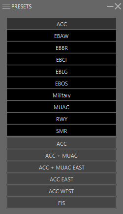

Presets Introduction
Unlike the MAPS window, which only switches a single map attribute on or off, making a selection in the PRESETS menu can make multiple changes to the display, including opening INSET windows for specific use.
Presets are used to define a set of maps which can be linked to an ATC station. These are often linked to a specific ATC Station which can be selected in the IVAC2 Launcher.
Presets can also be used to change maps for a certain purpose. In EBBU you can for instance control Extended Centerline, you can activate ALL easterly Extended Centerlines or ALL westerly Extended Centerlines.
We will go more in depth in what each preset does in the Presets List page
